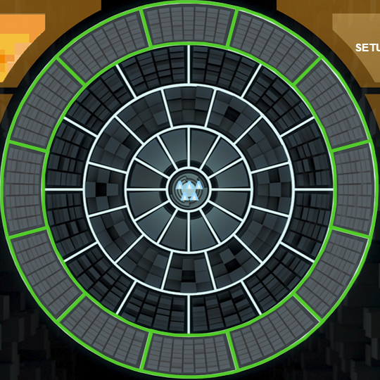
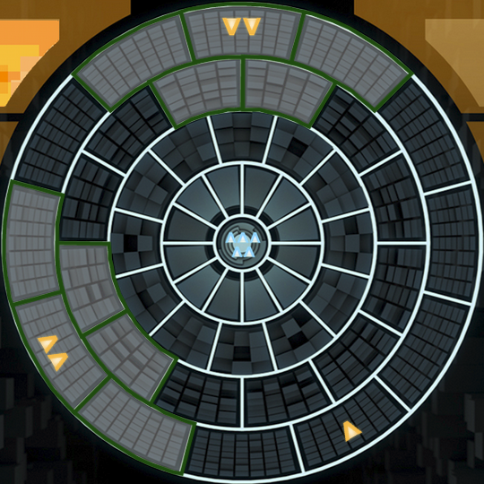
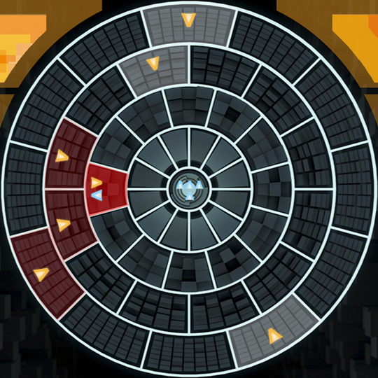
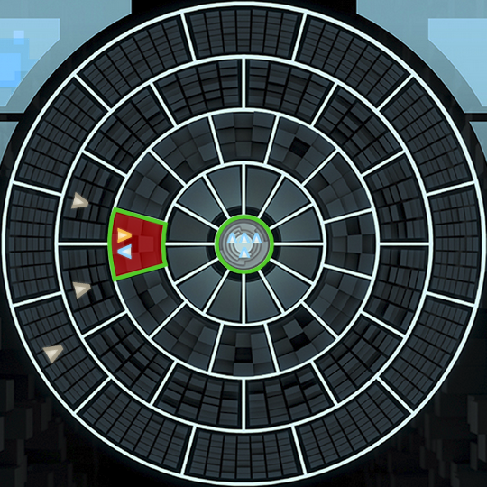

Asymmetric Warfare
By Michael Freeman
Introduction
This game depicts, in a very abstract way, the essence of insurgent warfare. The game is for two players, the State (representing the existing government or leadership of a country or organization) and the Insurgent (representing the opposition to that government or leadership). The State has powerful forces but less information; the Insurgent has complete information but little actual power. Whichever side overcomes its disadvantage wins (the State by gaining information on the Insurgents and killing them; the Insurgents by penetrating to the centre of State power).
Roles
Concepts
Hidden information: For the whole game, the Insurgent has complete visibility into all spaces on the map. The State can see only those spaces on the map that contain his own pieces, contain two or more Insurgent pieces, or are temporarily visible by “interrogating” an Insurgent piece.
The map: The map is in the shape of four concentric circles, each divided into 12 spaces for a total of 48 spaces. Each space is marked with coordinates: a letter from A to D denoting which ring it is in, and a space number from 1 to 12. An “adjacent space” is one that shares a border with another space; therefore, a space could be adjacent to from four to six spaces, depending on where it is on the map. The single central space is called the Capital, and the ring of 12 spaces surrounding it is called the Inner Circle.
Winning: The aim of the Insurgent is to place sufficient of his pieces in the Inner Circle that he is deemed to have captured the Capital. The aim of the State player is to eliminate 12 or more Insurgent pieces, making an Insurgent victory impossible.
Setup
All five State pieces begin the game in the Capital. The Insurgent starts with five pieces, grouped as he likes in any space or spaces of the outermost ring, highlighted in green: 
Playing the Game
The game is played in player-turns. The Insurgent first places their pieces and then the State player begins the game with the first move. If a player wishes he can always PASS – he does nothing and the other player begins his turn.
Insurgent's turn
The Insurgent can do both of these actions in his turn, once each:
- GROW – Any space where the Insurgent has two or more of his pieces may Grow another piece. The new piece is placed either in that space or any adjacent space. The Insurgent can grow at most one piece per game turn. The green highlighted squares indicate where the grown insurgent may be placed: 
- MOVE – each turn he is given two movement points to spend. Moving a piece from one ring to another costs two points, while moving to an adjacent space within the same ring only costs one. Insurgents may move as close as the Inner Circle, but can not enter the Capital. If two or more pieces are in the same space at any time, all pieces on that space become visible to the State.
The Insurgent may Grow before Moving, or vice versa if he wants. He does not have to do both actions, but he may not Move, Grow, Move. All Insurgent pieces that are revealed to the State will be highlighted with a pulsing red color while all spaces suspected through interrogation are highlighted with a solid red.

The State's turn
The State player can do both of these actions in his turn, once each.
- MOVE - each turn he is given two movement points to spend. Moving a piece from one ring to another costs two points, while moving to an adjacent space within the same ring only costs one. An exception to this is moving a piece to or from the Capital, which costs only one point. If two or more Insurgent pieces are in the same space, or one of his pieces occupies the same space as an Insurgent, that space and all pieces inside it are revealed to him.
- KILL or INTERROGATE – If a State piece moves into a space that contains one or more Insurgent pieces, or starts the turn in such a space, the State player can choose to either Kill or Interrogate the Insurgent pieces there (he can also choose to leave them alone: what’s in the space will still be visible but the Insurgent piece(s) is/are not otherwise affected).
- If he chooses to Kill, then all Insurgent pieces in that space are immediately removed from the game.
- If he chooses to Interrogate, then all spaces adjacent to the interrogated piece will be marked with a grey marker to indicate any suspected Insurgents at that space for 3 turns. In this image, the State piece to the left of the Capital has interrogated the insurgent occupying the same space. All connected insurgents have been marked with grey pieces. These grey markers will remain until the square is explored by the State player (note that the insurgents may have moved on already) or 3 turns have passed. 
The State player may Kill/Interrogate before Moving, or vice versa if he wants. He does not have to do both actions, but he may not Move, Kill/Interrogate, Move.
Winning the Game
The Insurgent wins by capturing the Capital. This is accomplished by having Insurgent pieces occupying either:
- four connected spaces in the Inner Circle (that is, there are at least four adjacent spaces in the Inner Circle occupied by Insurgents), or
- any six of the twelve spaces of the Inner Circle.
The State player wins if it is impossible for the Insurgents to win, either by:
- killing 12 Insurgent pieces, leaving Insurgents with only a maximum of 3 pieces left, or
- killing all but one Insurgent pieces in play, disabling their ability to Grow new pieces.